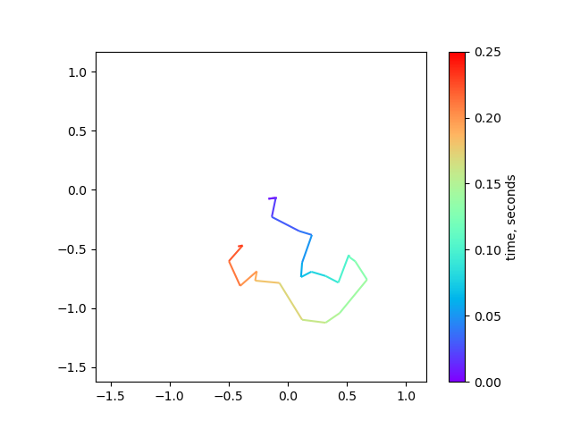

Daniel's blog on data visualization, image processing, etc.
Table of Contents
With the help of ChatGPT, finding information has become easier, resulting in a wealth of tips and tricks that can be difficult to manage. I primarily use Python, focusing on data visualization and image analysis, and plan to regularly update this blog with useful information for others. Additionally, this blog serves as an opportunity for me to practice using Emacs org-mode for writing and organizing what I learn in one place.
The stylesheet for this document is taken from Nicolas Rougier's https://github.com/rougier/notebook-mode. I'm using his nano-theme for my Emacs.
1. Plotting alphafold pLDDT colors on with line segments
import matplotlib.cm as cm import matplotlib.colors as mcolors import matplotlib.pyplot as plt import numpy as np import pandas as pd from matplotlib.collections import LineCollection alphafold_colors = ["#ee8453", "#f9dc4d", "#7fc9ef", "#2152ce"] af_cmap = mcolors.LinearSegmentedColormap.from_list( "pLDDT colors", colors=alphafold_colors ) # for discrete boundaries for colors plddt_bins = [0, 50, 70, 90, 100] # map the bins to colors '.N' is the number of colors specified in the colormap above cmap_boundary_norm = mcolors.BoundaryNorm(plddt_bins, af_cmap.N) data = pd.read_table("images/plddt_values.txt") # remove whitespace from column headers data.columns = data.columns.str.strip() x = data["resnum"].values y = data["plddt"].values xy = np.column_stack([x, y]) segments = np.concatenate( [xy[:-1, None, :], xy[1:, None, :]], axis=1 ) lc = LineCollection(segments, cmap=af_cmap, norm=cmap_boundary_norm, linewidth=2) lc.set_array(y) fig, ax = plt.subplots(figsize=(6,3)) ax.add_collection(lc) ax.autoscale() ax.set_xlabel("residue number") # Remove spines ax.spines['left'].set_visible(False) ax.spines['right'].set_visible(False) ax.spines['top'].set_visible(False) ax.yaxis.set_visible(False) # add colorbar fig.colorbar( cm.ScalarMappable(cmap=af_cmap, norm=cmap_boundary_norm), label="pLDDT score", ax=ax ) fig.tight_layout() fig.savefig("images/plddt_plot.png") return "./images/plddt_plot.png"
The scatterplot is much easier:
fig, ax = plt.subplots(figsize=(6,3)) ax.scatter(x,y,c=y,cmap=af_cmap, norm=cmap_norm, s=5) ax.set_ylabel("pLDDT score") ax.set_xlabel("residue number")

Alternatively you can just use plt.scatter to plot the same information with the same colorbar
2. Resolution of an objective lens
I was going through the excellent review article by Fazel et al. 2023 (https://arxiv.org/abs/2304.01456) and something clicked when I looked at Figure 2. I never really understood why higher NA objective lenses are actually needed to resolve smaller separation between points sources. I've been taking the fact that higher NA ∝ higher resolution for granted!
I made this animated version of the figure using matplotlib (without the objective lens):
import numpy as np import matplotlib.pyplot as plt from matplotlib.animation import FuncAnimation from IPython.display import HTML plt.rcParams["animation.embed_limit"] = 40.0 # setup coordinates dy = 0.085 dx = 0.085 xmax = 40.0 # micron ymax = 20.0 xpos = 5.0 ycenter = ymax / 2.0 y = np.arange(0, ymax, dy) x = np.arange(0, xmax, dx) Y,X = np.meshgrid(y, x, indexing='ij') λ = 0.800 k = 2 * np.pi / λ def compute_image(sep): y1 = ycenter + sep / 2 y2 = ycenter - sep / 2 θ1 = np.sqrt((Y-y1)**2 + (X-xpos)**2) θ2 = np.sqrt((Y-y2)**2 + (X-xpos)**2) frame = np.cos(k * θ1) + np.cos(k * θ2) return frame y_seps = np.abs(np.linspace(-10, 10, num=60)) # nseps = 200 # maxsep = 10.0 # y_seps = np.abs(maxsep * np.cos(2*np.pi/nseps * np.linspace(0,nseps))) frame = compute_image(y_seps[0]) fig, ax = plt.subplots(figsize=(10,5)) ax.set_xlabel("z-position, µm") ax.set_ylabel("y-position, µm") im = ax.imshow(frame, extent=(0, xmax, 0, ymax), cmap='cividis') pt1 = ax.plot(xpos, ycenter + y_seps[0]/2, 'wo', mec='k', ms=7) pt2 = ax.plot(xpos, ycenter - y_seps[0]/2, 'wo', mec='k', ms=7) def update_frame(i): new_frame = compute_image(y_seps[i]) pt1[0].set_data([5.0], [ycenter + y_seps[i]/2]) pt2[0].set_data([5.0], [ycenter - y_seps[i]/2]) im.set_data(new_frame) ax.set_title(f"Δ = {y_seps[i]:.2f} µm; λ = {λ * 1000:.0f} nm") return im, pt1, pt2 anim = FuncAnimation(fig, update_frame, frames=np.arange(y_seps.size), interval=50) anim.save("point_separation_interference.mp4")
The closer each points become, the larger the angles between of the destructive interference fringes. We need these fringes to actually resolve the points sources. When the separation becomes very close (smaller than the wavelength), you can see that the destructive interference "goes away" and the point source behave like a single points source. I didn't appreciate the fact that when points are far apart (much larger than the wavelength), these destructive interference fringes form even along y-coordinates between the points.. I guess I should think more about waves…
3. Taking a radial profile from an arbitrary center
It turns out you can use scipy.ndimage.mean to take a radial average of an n-dimensional image. To take the radial average from an arbitrary center you can just use scipy.ndimage.distance_transform_edt to compute the radial coordinates.
For this example, we'll create a cosine in 2D.
import numpy as np import scipy.ndimage as ndi import matplotlib.pyplot as plt Ny, Nx = 256, 256 originxy = (150.0, 64.0) x, y = np.meshgrid(np.arange(Nx), np.arange(Ny)) Θ = np.sqrt((x - originxy[0])**2 + (y - originxy[1])**2) # specify wavenumber of cosine λ = 50.0 # wavelength k = 2 * np.pi / λ # plot cosine wave coswave = np.cos(k * Θ) # calculate radial profile r_bins = np.round(Θ).astype(int) unique_r = np.unique(r_bins) radial_profile = ndi.mean(coswave, labels = r_bins, index = unique_r) fig, ax = plt.subplots(ncols=3, figsize=(10,3.2)) ax[0].imshow(Θ) ax[0].set_title("radial coordinate") ax[1].imshow(coswave, cmap='Greens') ax[1].plot(originxy[0], originxy[1], 'bx') ax[1].set_title(f"2-D cosine wave; λ={λ}") ax[2].plot(unique_r, radial_profile, 'k-', lw=1.5) ax[2].set_title("radial profile") fig.tight_layout() fig.savefig("./images/radial_profile.png") plt.close(fig) # needed for inline org-mode return "./images/radial_profile.png"
This can be useful when trying to compute radial average of a power spectrum
import numpy as np from matplotlib.colors import LogNorm import scipy.ndimage as ndi import matplotlib.pyplot as plt import skimage as sk img = sk.data.human_mitosis() ft_img = np.fft.rfft2(img) ps = np.abs(ft_img)**2 # get spacing from the frequency grids # we dont want frequencies so we just multiply back with shape u = np.fft.fftfreq(img.shape[0]) * img.shape[0] v = np.fft.rfftfreq(img.shape[1]) * img.shape[1] ky, kx = np.meshgrid(u,v, indexing='ij') ξ = np.sqrt(ky*ky + kx*kx) fig, ax = plt.subplots(ncols=3, figsize=(8, 3.5)) ax[0].imshow(ξ) ax[1].imshow(ps, norm=LogNorm()) freq_bins = np.round(ξ).astype(int) unique_freqs = np.unique(freq_bins) ps_profile = ndi.mean(ps, labels=freq_bins, index=unique_freqs) ax[2].plot(unique_freqs[5:], ps_profile[5:], '-') ax[2].set_yscale("log") plt.savefig("./images/power_spectrum.png") return "./images/power_spectrum.png"
4. Making a multi-channel composite image with custom colormap.
With a bonus of animating through the Z-slices. The link to the notebook is here (via github).
The tricks used here is a subject for future posts:
- displaying a 'frameless' image with
imshow()in matplotlib - mapping a grayscale image to an arbitrary colormap in matplotlib
- making composite multi-channel image with those said colormaps
- saving matplotlib animation as
.mp4or an interactive HTML.
5. Emulating an argmax() function
You can emulate argmax() function (returns the index of the maximum value in a sequence) in Python by doing:
mylist = [1,7,3,1,5] res = max(enumerate(mylist), key=lambda x: x[1]) # needed for inline org-mode return res
(1, 7)
This returns the argmax and the max value from a list. I occasionally use this when I don't need to use NumPy for a simple script.
6. Plotting multi-colored line in matplotlib
When plotting the 2D trajectory of diffusing particles or diagnosing drift in microscopy timelapse data, it can be helpful to use color to indicate time. This can be achieved using the matplotlib.collections.LineCollection object. In this example, we'll simulate 2D diffusion and plot the trajectory of a single particle over time.
from matplotlib.collections import LineCollection from matplotlib.colors import Normalize import matplotlib.pyplot as plt import numpy as np dt = 0.010 D_coef = 1.0 Nt = 25 # simulate diffusion steps xsteps = np.random.randn(Nt) * np.sqrt(2 * D_coef * dt) ysteps = np.random.randn(Nt) * np.sqrt(2 * D_coef * dt) # construct a (cumulative) trajectory from the steps x = np.cumsum(xsteps) y = np.cumsum(ysteps) # assemble into Nt x 2 array xy = np.column_stack([x,y]) # create a list of line segments from xy[n, :] to xy[n+1, :] # For N points, there will be N-1 line segments connecting between points # use the 'np.newaxis = None' trick to create a new axis (at axis=1) # this makes Nt-1 x 2 x 2 array to represent line segments 'from' -> 'to' segments = np.concatenate( [xy[:-1,None,:], xy[1:,None,:]], axis=1 ) # create the line segments to be drawn lc = LineCollection( segments, cmap="rainbow", norm=Normalize(0,Nt * dt), linewidths=1.5 ) # this sets the data array for each segment # each data point gets mapped to a color by the 'cmap' and 'norm' lc.set_array(np.arange(Nt) * dt) # plot the data fig, ax = plt.subplots() ax.add_collection(lc) # set axis limit axlim_min = min(x.min(), y.min()) - 0.5 axlim_max = max(x.max(), y.max()) + 0.5 ax.set_xlim((axlim_min, axlim_max)) ax.set_ylim((axlim_min, axlim_max)) ax.set_aspect("equal") fig.colorbar(lc, ax=ax, label="time, seconds") fig.savefig("./images/simulated_diffusion.png") plt.close(fig) # needed for inline org-mode return "./images/simulated_diffusion.png"
